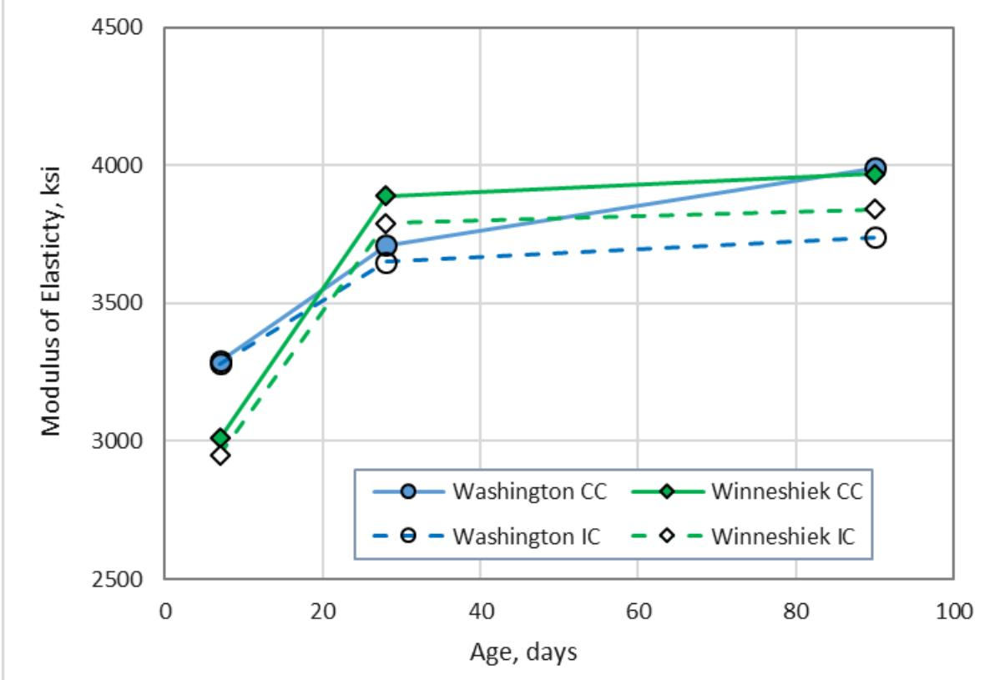
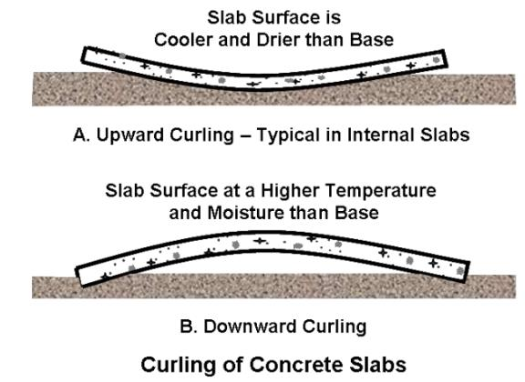

Preservation & Rehabilitation
Preservation and rehabilitation encompasses strategic interventions designed to extend the functional service life of existing infrastructure through structural modification and performance enhancement. These techniques typically involve placing a new concrete layer over deteriorated surfaces, utilizing mechanistic design principles to predict critical stresses and strains under anticipated traffic and environmental loads [1]. System performance relies on selecting appropriate bonding configurations, such as bonded or unbonded designs, which determine how the new slab interacts with the underlying support structure to mitigate distresses like reflective cracking and deflection [2] [3]. Advanced material applications, including fiber reinforcement and internal curing technologies, are employed to improve fatigue capacity, control shrinkage-related cracking, and ensure long-term durability under repeated loading conditions [4] [5] [6].
CP Tech Center reports covering “Preservation & Rehabilitation” also include the following subtopics: Composite Pavement, Concrete Overlay, and Repair & Recycling.
Preservation & Rehabilitation focuses on extending the functional lifespan of existing infrastructure through targeted structural interventions. Composite Pavement achieves this by combining a rigid concrete overlay with an underlying flexible or rigid base, using the strength of concrete alongside the ride quality of asphalt. Concrete Overlay restores structural integrity and enhances load-bearing capacity by placing a new portland cement concrete layer over deteriorated surfaces. Repair & Recycling maintains service life through targeted interventions like full-depth patching and rubblization to restore the pavement’s underlying structure.
Sources (9)
Sub-concepts (3)
Key findings
- Found that composite pavement strategies face critical trade-offs between structural rigidity and stress distribution, as combining rigid overlays with existing bases increases transverse tensile stresses in underlying layers due to confinement forces [2].
- Demonstrated that the effectiveness of composite systems is highly sensitive to interface conditions, where deeper cracks or joints at layer boundaries substantially elevate stresses in intermediate layers and alter stress distribution across the pavement structure [2].
- Observed that fully bonded layers significantly reduce deflections and stresses compared to unbonded configurations, making accurate characterization of existing layer conditions and interface bonding essential for design procedures [1].
- Reported a critical gap in mechanistic-empirical approaches, as very few current procedures evaluate the effectiveness of repairs in preventing or delaying future distress, necessitating enhanced modeling of existing pavement conditions and remaining service life [7].
- Identified that preservation efforts are transitioning from method-based specifications to performance-based design guides, yet a lack of understanding regarding the importance of tracking maintenance treatments hinders continuous monitoring of effectiveness [7].
- Showed that successful execution relies on resolving conflicts between vertical tolerances and concrete yield through precise pre-construction planning and advanced stringless control systems, rather than field adjustments [8].
- Revealed that integration of maturity monitoring allows for accelerated project timelines by enabling early joint sawing and local traffic access based on specific flexural strength thresholds, thereby reducing overall construction duration [8].
- Found that agency hesitation often stems from misconceptions about cost and constructability, despite proven sustainability benefits, requiring rigorous pre-construction evaluation to identify vertical constraints and existing layer conditions [3].
Overlay Design and Performance Optimization
Evidence: 8 reports (8 primary)
Overlay design relies on mechanistic principles to predict critical stresses and strains within the concrete slab and underlying support layers, ensuring that fatigue limits for flexural stress and tensile strain are not exceeded under anticipated traffic and environmental conditions [1]. The selection between bonded and unbonded configurations depends on the condition of the existing pavement and the need to control reflective cracking, with unbonded systems utilizing a separation layer to isolate the new slab from underlying distresses [2] [3]. Key design parameters such as overlay thickness, joint spacing, and material durability are optimized to accommodate thermal movements, prevent mid-panel cracking, and ensure long-term structural stability under service loads [9] [5].
The following figure illustrates the practical application of these principles in placing a four-inch thick unbonded concrete overlay.
 A large yellow paving machine is shown placing a fresh layer of concrete over a prepared black surface. [3]
A large yellow paving machine is shown placing a fresh layer of concrete over a prepared black surface. [3]
The image displays heavy construction equipment actively spreading wet concrete onto a dark, prepared base layer.
Research problem — Current design practices rely on empirical methods that fail to account for modern techniques, creating a gap in understanding how specific material and geometric choices influence long-term pavement performance [7]. There is a critical need to optimize joint spacing and bond conditions to balance timely crack activation against risks such as excessive curling stresses and reflective cracking, which are not fully captured by existing mechanistic models [4] [5]. The industry lacks standardized procedures for selecting overlay candidates and managing construction constraints, leading to uncertainties in design specifications and difficulties in transitioning research findings into practical implementation [1] [3].
The following figure illustrates how these design variables influence long-term performance by comparing predicted roughness over time for a specific overlay configuration.
 Pavement ME Design predicted IRI values versus age for UBCOC overlays. [5]
Pavement ME Design predicted IRI values versus age for UBCOC overlays. [5]
The figure plots the International Roughness Index (IRI) against pavement age to demonstrate how different overlay thicknesses affect long-term performance. It illustrates that concrete overlays perform well with a service life of approximately 30 years before an IRI threshold is reached, supporting the use of mechanistic design principles to predict critical stresses and strains under anticipated traffic loads.
State of the art — The field has transitioned from empirical, thickness-based methods to comprehensive mechanistic-empirical frameworks that optimize overlay design by integrating life-cycle costs, sustainability metrics, and probabilistic reliability [7] [1]. Design optimization increasingly relies on advanced three-dimensional finite element modeling to simulate complex interactions such as interface bonding conditions, thermal gradients, and partial debonding effects that significantly amplify tensile stresses [2] [1]. Current best practices mandate rigorous pre-design assessment using tools like Falling Weight Deflectometer testing and coring to determine existing pavement conditions, which informs the selection between bonded and unbonded configurations based on distress types and traffic loads [8] [3]. While fiber reinforcement is widely adopted to mitigate reflective cracking in thin overlays, its primary design role remains enhancing fatigue capacity rather than significantly altering joint activation behavior or load transfer efficiency compared to traditional steel reinforcement [4] [5].
The following figure illustrates the curling and warping behavior of concrete pavement slabs.
 Curling and warping behavior of concrete pavement slabs [4]
Curling and warping behavior of concrete pavement slabs [4]
The figure illustrates the deformation of a Jointed Plain Concrete Pavement (JPCP) slab resting on a pavement base under two distinct environmental conditions. Under warmer and wetter top conditions, the slab curls upward with tension at the top surface, whereas cooler and dryer top conditions cause the slab to curl downward with tension at the bottom.
Findings from the reports
- Observed that narrower transverse joint spacing (5.5–6 ft) generally yields higher load transfer efficiency and fewer cracks compared to wider spacings, with longer intervals leading to faster and more complete joint activation due to increased shrinkage stresses [4] [9] [5].
- Found that finite element analysis reveals a critical trade-off where surface structural benefits from composite pavements, such as reduced deflection via arch action, come at the cost of elevated transverse tensile stresses in underlying layers due to confinement forces [2] [1].
- Reported that fiber reinforcement effectively mitigates reflective cracking by keeping cracks tighter in sections with extended joint spacing, but did not demonstrate statistically significant improvements in load transfer, smoothness, or curling behavior at standard dosages [4] [5].
- Demonstrated that accurate determination of pavement maturity using temperature monitoring is essential for safe early opening, with specific flexural strength thresholds achievable in less than 24 hours to minimize public inconvenience [2] [8].
- The report demonstrated that stringless paving with machine control effectively guides slipform pavers without traditional stringlines, provided designers establish accurate models to resolve conflicts between design profiles and existing surface geometrics prior to construction [8] [3].
- Measured that conventional bonded overlays achieve high joint load transfer efficiency (83.7% to 87.2%), whereas deliberately unbonded sections using geotextile separation layers exhibit substantially lower load transfer and higher deflection [4].
- Identified that the ratio of slab length to radius of relative stiffness (L/ℓ) serves as a reliable indicator for joint activation behavior, with values between 4 and 7 providing an optimal balance for timely activation and performance [5].
- Found that concrete overlays significantly exceed historical service life expectations, with the majority of projects maintaining good structural condition and acceptable ride quality for over three decades in field investigations [9].
- Evaluated that premature deterioration is rarely inherent to specific design flaws but rather stems from correctable issues such as material durability defects, inadequate drainage, or construction-related curling stresses exacerbated by high surface-area-to-volume ratios [9].
- Noted that the field is transitioning from empirical design methods to mechanistic-empirical approaches, yet a critical gap remains in evaluating how preservation treatments delay distress progression and optimize life-cycle costs [7].
Novelty & rigor — Novel mechanistic-empirical frameworks have been developed to explicitly model partial bonding between concrete overlays and underlying asphalt, moving beyond traditional assumptions of fully bonded or unbonded conditions to capture realistic interface stresses [1]. Research has introduced the ratio of slab length to radius of relative stiffness as a critical design indicator for optimizing joint spacing, enabling designers to balance timely joint activation against excessive curling stresses [5]. Reproducing these advanced designs requires rigorous integration of three-dimensional finite element modeling calibrated with field data, alongside precise construction protocols such as maturity-based traffic control and stringless machine guidance to ensure structural integrity and dimensional accuracy [2] [8] [1].
The following figure illustrates how these design principles apply to specific field conditions by demonstrating the relationship between joint activation, slab length relative to stiffness, and joint spacing in the Mitchell County concrete overlay test sections.
 Joint activation vs. L/ℓ and joint spacing for Mitchell County concrete overlay test sections [5]
Joint activation vs. L/ℓ and joint spacing for Mitchell County concrete overlay test sections [5]
The figure displays a dual-axis chart plotting the percentage of joint activation against four different slab lengths, alongside the corresponding ratio of slab length to radius of relative stiffness (L/l). The ratio of slab length to radius of relative stiffness appears to be a good indicator for joint activation behavior and can be used to help optimize joint spacing design for concrete overlays.
Reported values
| Parameter | Value | Context | Source |
|---|---|---|---|
| scarification depth | 1/4 inches | top layer of oils and road grime removal for concrete bonding | [2] |
| wireless sensor range | 1–10 mile | future direction for construction applications | [2] |
| backcalculated effective thickness | 10.0 in. | sections with 4 in. overlay design thickness | [4] |
| backcalculated effective thickness | 11.7 in. | sections with 6 in. overlay design thickness | [4] |
| cracking percentage | 5% | slabs cracked (PMED prediction) | [4] |
| joint load transfer efficiency (LTE) | 44.9% | COC–U overlay sections plus the COA overlay with the geotextile separation layer | [4] |
| joint load transfer efficiency (LTE) | 83.7% | conventional COA–U overlay sections | [4] |
| cost savings per unit area | $4.72 | per square yard on this project | [8] |
| flexural strength | 350 psi | research cases after paving | [8] |
| machine control elevation tolerance | 0.01–0.05-foot | smoothness requirements for incentive pay | [8] |
| percentage cost reduction | 67% | cost savings per square yard on this project | [8] |
| fiber reinforcement dosage | 4 lb/yd3 | fiber-reinforcement effect on joint activation behavior | [5] |
| L/l ratio | 4-7 | designing joint spacing for optimal balance between timely joint activation and overlay performance | [5] |
| overlay placement start time | 6:15 am | November 16, 2009 concrete overlay placement | [3] |
| recyclability | 100% | concrete overlays | [3] |
10 more distinct values omitted here; the full span-verified set is in the quantities sidecar.
Across the reviewed reports, finite element analysis and field performance data collectively establish that interface bonding conditions are a primary determinant of structural capacity, with fully bonded configurations significantly reducing deflections and enhancing load transfer efficiency compared to unbonded systems. While mechanistic-empirical design procedures have evolved to account for dynamic material properties and partial bonding, a critical gap remains in the ability of current guidelines to accurately predict distress progression or evaluate the effectiveness of repairs in delaying future failures. Joint spacing emerges as a predominant design factor governing joint activation and load transfer efficiency, with narrower spacings generally improving performance metrics but requiring careful calibration of the slab length to radius of relative stiffness ratio to balance timely activation against excessive cracking risks. Although fiber reinforcement effectively mitigates reflective cracking in sections with wide joint spacing, it does not significantly impact early-age load transfer or smoothness, highlighting a divergence between observed material benefits and the capabilities of existing design tools to model these effects. [7] [2] [4] [5] [1]
The following figure illustrates the practical application of these mechanistic principles by showing the BCOA-ME predicted cracking at Site 4.
 BCOA-ME predicted cracking at Site 4 [4]
BCOA-ME predicted cracking at Site 4 [4]
The figure displays a bar chart comparing the percentage of cracked slabs across different joint spacing intervals and slab configurations. It illustrates that predicted cracking is significantly higher for 4-inch thick sections without fibers compared to those with fiber reinforcement or increased thickness. The data demonstrates that increasing slab thickness and utilizing fiber reinforcement effectively reduces the percentage of cracked slabs in this mechanistic-empirical prediction model.
Implications — Designers must prioritize rigorous pre-assessment of existing layer conditions and interface management, as the performance of overlays is heavily dependent on the durability of underlying materials and proper bonding to prevent reflective cracking [2] [1] [3]. The industry should transition from empirical methods to mechanistic-empirical approaches that integrate life-cycle cost analysis and environmental assessment to optimize treatment timing and reduce long-term expenses [7]. Joint spacing must be optimized to balance construction costs with the risk of mid-panel cracking, ensuring timely joint activation while accounting for material durability and drainage requirements [9] [5]. Practitioners should recognize that fiber reinforcement does not substitute for traditional load transfer mechanisms like dowel bars, particularly in bonded systems where interface integrity is critical for structural performance [4].
The following figure illustrates how varying joint spacing affects the required overlay thickness and crack distribution in concrete rehabilitation projects.
 Predicted concrete overlay thickness versus maximum allowable percentage of cracked slabs for various underlying HMA conditions. [5]
Predicted concrete overlay thickness versus maximum allowable percentage of cracked slabs for various underlying HMA conditions. [5]
The figure plots the relationship between the predicted concrete overlay thickness and the maximum allowable percentage of cracked slabs, demonstrating how structural design requirements change as pavement distress increases. It compares scenarios with different underlying Hot Mix Asphalt (HMA) layer conditions, specifically varying thicknesses and the presence of fiber reinforcement, to show their impact on overlay design.
Limitations — Current analytical models often rely on simplifying assumptions, such as perfect bonding and the absence of cracks, which may not reflect actual field conditions where bond failure or cracking dominates structural behavior [2]. There is a significant lack of fundamental mechanistic relationships for preservation designs, forcing reliance on empirical approaches that fail to account for modern features like concrete overlays and permeable bases [7]. Existing design guides often fail to optimize life-cycle costs or account for future rehabilitation needs, necessitating new tools to analyze multiple initial designs alongside optional preservation treatments [7]. Current mechanistic-empirical design models frequently lack local calibration for thin overlays, potentially misrepresenting service life predictions when joint spacing exceeds recommended thresholds [5].
The following figure illustrates how varying joint spacing affects the predicted overlay thickness and crack allowance under these mechanistic-empirical conditions.
 Predicted concrete overlay thickness versus maximum allowable percentage of cracked slabs for various underlying HMA configurations. [5]
Predicted concrete overlay thickness versus maximum allowable percentage of cracked slabs for various underlying HMA configurations. [5]
The figure plots the relationship between the recommended concrete overlay thickness and the maximum allowable percentage of cracked slabs, demonstrating how structural design requirements change based on existing pavement distress levels.
Material Composition and Durability Mechanisms
Evidence: 2 reports (1 primary)
Material composition fundamentally dictates pavement durability by determining how a structure resists cracking, fatigue, and environmental degradation through its inherent mechanical properties. In concrete-based systems, the inclusion of discrete fibers enhances fracture resistance and post-crack load-carrying capacity by bridging developing cracks to absorb energy and limit propagation [4]. These compositional enhancements improve long-term service life by maintaining tight joint openings, which preserves aggregate interlock and reduces the infiltration of damaging water and debris [4].
The following figure illustrates the design benefits associated with using fiber-reinforced concrete.
 Design benefits of using FRC [4]
Design benefits of using FRC [4]
The figure illustrates a flowchart where the addition of macro-fibers to concrete leads to smaller crack widths and reduced crack deterioration rates. These material improvements provide designers with two primary options: creating a thinner slab for the same fatigue performance or achieving longer fatigue performance.
Findings from the reports
- Found that achieving tight vertical tolerances for smoothness often conflicts with managing concrete yield, requiring precise pre-construction planning of design models rather than field adjustments to resolve geometric and safety standard discrepancies [8].
- Demonstrated that advanced stringless control systems replicate designer intent effectively but require strict line-of-sight maintenance, as environmental factors like fog or dust can cause operational shutdowns [8].
- Showed that integrating maturity monitoring enables accelerated project timelines by allowing early joint sawing and local traffic access based on specific flexural strength thresholds, thereby reducing overall construction duration despite logistical challenges [8].
Implications — Designers must finalize surface profiles before contract letting to resolve trade-offs between geometric tolerances and concrete yield, ensuring that accurate existing surface mapping is available for precision machine control [8]. Specifying maturity-based strength monitoring allows agencies to accelerate project timelines by enabling early access and resumption of work, thereby reducing overall disruption while maintaining material integrity [8].
The following figure illustrates the GPS receiver and laser profiler mounted on a John Deere Gator, which are essential tools for achieving the precise surface mapping required for these operations.
 John Deere Gator equipped with GPS receiver and laser profiler for pavement surface mapping. [8]
John Deere Gator equipped with GPS receiver and laser profiler for pavement surface mapping. [8]
The image shows a green utility vehicle outfitted with a large overhead sign structure, a laptop computer mounted on the dashboard, and an amber warning light bar. This apparatus is used for data collection to determine the ability of the GPS system to map the existing pavement surface to a vertical accuracy sufficient for pavement overlay quantity estimation and control. The vehicle is equipped with sensors that provide x,y,z coordinates, which are essential inputs for designing concrete overlays over deteriorated surfaces.
Limitations — The effectiveness of durability-enhancing technologies is constrained by environmental factors, such as fog or dust, which can disrupt electronic guidance systems and compromise material placement accuracy [8]. Achieving long-term structural integrity requires precise pre-construction planning to resolve conflicts between existing pavement geometrics and modern standards, as ambiguous contract depth requirements often lead to costly field adjustments that undermine material efficiency [8].
Construction Execution Trade-offs
Evidence: 1 report (1 primary)
Construction execution trade-offs in pavement rehabilitation involve balancing the immediate performance benefits of advanced material technologies against their logistical complexity and cost implications during installation. Techniques such as internal curing provide superior early-age moisture control and reduced shrinkage cracking by utilizing internal reservoirs, yet they require precise mix design and handling compared to conventional external curing methods that rely on surface application with limited penetration depth [6]. The decision between these approaches hinges on whether the long-term durability gains from enhanced microstructural properties justify the increased execution sensitivity and potential for placement errors inherent in specialized material systems.
Research problem — The widespread adoption of internal curing techniques is hindered by significant logistical difficulties in sourcing and preconditioning lightweight fine aggregates, creating a barrier to implementing methods that effectively mitigate early-age cracking [6]. Pavement preservation strategies must navigate the trade-off between higher initial construction expenditures for advanced material modifications and the long-term economic benefits derived from extended service life and reduced maintenance frequency [6].
The following figure illustrates the practical application of these preservation strategies by comparing winter pavement surface movement between an internal curing section and a control section.
 Winter pavement surface movement in Washington County: IC section (top) and control section (bottom) [6]
Winter pavement surface movement in Washington County: IC section (top) and control section (bottom) [6]
The figure displays a three-dimensional mesh representing the spatial distribution of vertical displacement across a concrete slab, with color gradients indicating varying magnitudes of movement. This visualization demonstrates how temperature and moisture gradients induce physical deformation in pavement structures, which is a critical factor in evaluating the performance of preservation techniques like internal curing.
State of the art — The adoption of internal curing technologies, such as saturated lightweight aggregates or superabsorbent polymers, is increasingly recognized for mitigating early-age cracking and enhancing long-term durability by lowering the concrete’s modulus of elasticity and permeability [6].
The figure below illustrates how these internal curing technologies influence the material properties by presenting modulus of elasticity test results.

Modulus of elasticity test results (psi) [6]The figure plots the modulus of elasticity in ksi against age in days for concrete mixtures incorporating internal curing (IC) and conventional curing (CC). The data indicates that using internal curing technologies resulted in a lower modulus of elasticity compared to the control mixture. This reduction is desirable because, under a given strain, a lower modulus of elasticity will result in reduced stress and so a reduced risk of cracking.
Findings from the reports
- Internal curing using lightweight fine aggregate reduced early-age cracking, warping, and vertical movement by buffering moisture gradients within concrete overlays [6].
- The internal curing technique improved the degree of hydration over time and significantly decreased mixture permeability compared to conventional mixes [6].
- Life-cycle cost analyses demonstrated that extended rehabilitation intervals yielded net long-term financial savings despite modest increases in initial construction costs [6].
- Implementation of internal curing faced logistical challenges related to the transportation and preconditioning of lightweight aggregates [6].
Novelty & rigor — The novelty lies in shifting from external curing to internal water reservoirs via saturated lightweight fine aggregate, which uniquely mitigates early-age shrinkage and warping by buffering moisture gradients within the slab structure [6]. Reproducibility is constrained by the logistical complexity of obtaining and preconditioning this specialized aggregate to ensure saturation, requiring precise mix design protocols and specific sensor-based field validation to monitor moisture dynamics [6].
The following figure illustrates the concrete slab warping and curling that this internal curing approach aims to mitigate.

Concrete slab warping and curling [6]The figure illustrates two distinct modes of concrete slab deformation: upward curling, where the surface is cooler and drier than the base, and downward curling, where the surface is at a higher temperature and moisture level. These deformations are caused by temperature and moisture gradients within the slab structure.
Reported values
| Parameter | Value | Context | Source |
|---|---|---|---|
| predicted life | 20 years | conventional mixtures | [6] |
| predicted life | 27 years | IC mixtures | [6] |
| rehabilitation interval | 20 years | conventional mixtures | [6] |
| rehabilitation interval | 27 years | IC mixtures | [6] |
| vertical movement | 0.9 mm | IC section | [6] |
| vertical movement | 2.2 mm | CC section | [6] |
Implications — Designers should prioritize long-term lifecycle benefits over modest initial cost increases when specifying internal curing, as the technique significantly extends service life and reduces rehabilitation frequency [6]. Construction planning must address supply chain logistics for lightweight fine aggregates early in the process to ensure reliable preconditioning and handling capabilities [6].
Limitations — The logistical complexity of sourcing, transporting, and preconditioning lightweight fine aggregate creates significant scaling challenges for large-scale construction projects [6]. Construction decisions must account for the fact that internal curing offers negligible structural benefits under low traffic loads, relying entirely on durability improvements rather than strength enhancement to justify its use [6].
The following figure illustrates how these material properties influence structural performance under load.
 Compressive strength test results [6]
Compressive strength test results [6]
The figure plots compressive strength in psi against age in days for concrete mixtures incorporating lightweight fine aggregate (LWFA) and internal curing (IC). Using LWFA appeared to improve the compressive strength of both mixture designs, particularly at 90 days.
Related concepts
In this hierarchy
- Parent: CP Tech Center Reports
- Child: Composite Pavement
- Child: Concrete Overlay
- Child: Repair & Recycling
Related by shared evidence
- Concrete Overlay — shares 9 reports
- Unbonded Concrete Overlay — shares 8 reports
- Bonded Concrete Overlay on Asphalt (BCOA) — shares 7 reports
- Concrete Pavement Joint — shares 7 reports
- Thin Whitetopping — shares 7 reports
- Transverse Cracking — shares 7 reports
- Unbonded Concrete Overlay on Concrete (UBCOC) — shares 7 reports
- Curling and Warping — shares 6 reports
Similar topics
- Concrete Overlay
- Composite Pavement
- Unbonded Concrete Overlay
- Repair & Recycling
- Lifecycle Cost Analysis
- Unbonded Concrete Overlay on Concrete (UBCOC)
- Concrete Pavement Sustainability
- Bonded Concrete Overlay on Asphalt (BCOA)
References
- J. K. Cable, F. S. Fanous, H. Ceylan, D. Wood, D. Frentress, T. Tabbert, S. Y. Oh, and K. Gopalakrishnan, "Design and Construction Procedures for Concrete Overlay and Widening of Existing Pavements," Center for Portland Cement Concrete Pavement Technology, Iowa State University, Ames, IA, Rep. TR-511, 2005. [Online]. Available: https://www.intrans.iastate.edu/wp-content/uploads/2018/03/oreo_design.pdf
- J. K. Cable, M. L. Anthony, F. S. Fanous, and B. M. Phares, "Evaluation of Composite Pavement Unbonded Overlays: Phases I and II," Center for Portland Cement Concrete Pavement Technology, Iowa State University, Ames, IA, Rep. TR-478, 2003. [Online]. Available: https://www.intrans.iastate.edu/research/completed/evaluation-of-composite-pavement-unbonded-overlays-phase-iii-tr-478-hr-1093-proj-2/
- G. Fick and D. Harrington, "Concrete Overlay Field Application Program, Final Report: Volume I," National Concrete Pavement Technology Center, Ames, IA, 2012. [Online]. Available: https://apps.itd.idaho.gov/apps/manuals/Materials/Materials%20References/OverlayFieldAppFinalReport.pdf
- D. King, B. Yang, P. Taylor, and H. Ceylan, "Field Performance of Fiber-Reinforced Concrete Overlays," Institute for Transportation, Iowa State University, Ames, IA, Rep. TR-816, 2025. [Online]. Available: https://www.intrans.iastate.edu/wp-content/uploads/2025/05/field_performance_of_frc_overlays_w_cvr.pdf
- J. Gross, D. King, H. Ceylan, Y. A. Chen, and P. Taylor, "Optimized Joint Spacing for Concrete Overlays with and without Structural Fiber Reinforcement," National Concrete Pavement Technology Center, Ames, IA, Rep. TR-698, 2019. [Online]. Available: https://www.intrans.iastate.edu/wp-content/uploads/2019/06/optimized_joint_spacing_for_overlays_w_cvr.pdf
- A. Daghighi, P. Taylor, H. Ceylan, and Y. Zhang, "Impacts of Internally Cured Concrete Paving on Contraction Joint Spacing Phase II," National Concrete Pavement Technology Center, Iowa State University, Ames, IA, Rep. TR-746, 2021. [Online]. Available: https://www.cptechcenter.org/wp-content/uploads/2021/05/IC_concrete_paving_impacts_phase_II_field_impl_w_cvr.pdf
- D. Harrington, R. Rasmussen, D. Merritt, T. Cackler, and P. Taylor, "Long-Term Plan for Concrete Pavement Research and Technology—The Concrete Pavement Road Map (Second Generation): Volume II, Tracks (FHWA-HRT-11-070)," National Center for Concrete Pavement Technology, Iowa State University, Ames, IA, 2012. [Online]. Available: https://www.fhwa.dot.gov/publications/research/infrastructure/pavements/pccp/11070/11070.pdf
- P. D. Wiegand, J. K. Cable, T. Cackler, and D. Harrington, "Improving Concrete Overlay Construction," National Concrete Pavement Technology Center, Ames, IA, Rep. TR-600, 2010. [Online]. Available: http://publications.iowa.gov/20076/1/IADOT_tr_600_Improving_Concrete_Overlay_Construction_2010.pdf
- J. Gross, D. King, D. Harrington, H. Ceylan, Y. A. Chen, S. Kim, P. Taylor, and O. Kaya, "Concrete Overlay Performance on Iowa's Roadways (Field Data Report)," National Concrete Pavement Technology Center, Ames, IA, Rep. TR-698, 2017. [Online]. Available: https://www.intrans.iastate.edu/wp-content/uploads/2017/09/Iowa_concrete_overlay_performance_w_cvr.pdf
Feedback on this page